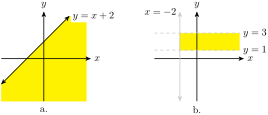

Section 10.1 Polar Coordinates
The Cartesian coordinate system is also called the rectangular coordinate system, because it describes a location in the plane as the vertex of a rectangle. To construct a rectangular coordinate system, we begin with two perpendicular axes that intersect at the origin. The \(x\)- and \(y\)-coordinates of a point indicate the length and width of a rectangle with one vertex at the origin. The point \(P(x,y)\) sits at the opposite vertex of the rectangle, as shown in the figure below.
In Chapter 9 we used vectors to specify a location by giving a distance and a direction. For example, we might say that the airport is located 5 miles southwest of the city center. This method of designating locations is so useful that we will construct a new coordinate system using the same tools: distance and direction.
In the polar coordinate system we start with the origin or pole, and a single ray from the pole, called the polar axis. We describe the location of a point \(P\) in the plane by measuring the distance, \(\abs{r}\text{,}\) from \(P\) to the pole, and the angle, \(\theta\text{,}\) that \(\vec{OP}\) makes with the polar axis (measured counterclockwise). The components of the ordered pair \((r, \theta)\) are called the polar coordinates of the point \(P\text{.}\)
Polar Coordinates.
The polar coordinates of a point \(P\) in the plane are \((r, \theta)\text{,}\) where
\(\abs{r}\) is the distance from \(P\) to the pole,
\(\theta\) is the angle measured counterclockwise from the polar axis to the ray through \(P\) from the pole.
In our work with polar coordinates, we will always use radians for the angle \(\theta\text{.}\) For example, the point \(P\left(2, \dfrac{\pi}{2}\right)\) is located 2 units from the pole at an angle of \(\dfrac{\pi}{2}\) radians, and \(Q(3,4)\) is located 3 units from the pole at an angle of 4 radians. The graphs of \(P\) and \(Q\) are shown at right.
A piece of graph paper in rectangular coordinates consists of a grid of horizontal and vertical lines. These are the lines \(x=k\) and \(y=k\text{,}\) for evenly spaced values of \(k\text{.}\) Each vertical grid line consists of points that have the same \(x\)-coordinate, and each horizontal grid line is made up of points that have the same \(y\)-coordinate. The grid lines are bench marks to help us locate points with specific rectangular coordinates.
A piece of graph paper in polar coordinates consists of a grid of concentric circles and radial lines, as shown below. Each circle consists of points with the same \(r\)-coordinate; they are all the same distance from the pole. All points with the same \(\theta\)-coordinate lie on one of the radial lines. This grid helps us locate points with specific polar coordinates.
Subsection Plotting Points
You are used to thinking in rectangular coordinates: to locate a point, we move so many units left or right, and so many units up or down. When working in polar coordinates, we want to "think radially:" how far to move from the pole, and in which direction.
Example 10.1.
Plot the points whose polar coordinates are given: \(A\left(1, \dfrac{\pi}{2}\right)\) and \(B\left(2, \dfrac{7\pi}{4}\right)\text{.}\)
Solution.
To plot point \(A\text{,}\) we move 1 unit away from the pole in the direction \(\dfrac{\pi}{2}\text{,}\) as shown at right. To plot point \(B\text{,}\) we move 2 units away from the pole in the direction \(\dfrac{7\pi}{4}\text{.}\)
Checkpoint 10.3.
Give the polar coordinates of the points \(S\) and \(T\) shown at right, with \(0 \le \theta \le 2\pi\text{.}\)
Answer.
\(S\left(2,\pi\right)\text{,}\) \(T\left(3,\dfrac{2\pi}{3}\right)\)
Each point has infinitely many polar coordinates, because we can add multiples of \(2\pi\) to the value of \(\theta\text{.}\) For example, the point with polar coordinates \(\left(1, \dfrac{\pi}{2}\right)\) also has polar coordinates \(\left(1,\dfrac{5\pi}{2}\right)\) and \(\left(1, \dfrac{-3\pi}{2}\right)\text{.}\)
If we allow negative values of \(r\text{,}\) there are even more ways to write the coordinates of a point. Each angle designates a line through the pole, and each line has both a postive and a negative direction.
On the line at \(\theta = \dfrac{\pi}{4}\text{,}\) for instance, the positive direction lies in the first quadrant, so that the point \((2, \dfrac{\pi}{4})\) is designated by \(P\) in the figure at right. To plot the point \((-2, \dfrac{\pi}{4})\text{,}\) we move in the opposite direction from the pole, arriving at point \(Q\text{.}\) Note that the point \(Q\) can also be designated by the coordinates \((2, \dfrac{5\pi}{4})\text{.}\)
Non-Uniqueness of Polar Coordinates.
Any point with polar coordinates \((r, \theta)\) also has coordinates \((r, \theta + 2k\pi)\text{,}\) where \(k\) is an integer.
The point \((r, \theta)\) can also be designated by \((-r, \theta + \pi)\text{.}\)
The pole has coordinates \((0, \theta)\text{,}\) for any value of \(\theta\text{.}\)
Example 10.4.
Give polar coordinates with negative \(r\)-values for the points in the previous exercise.
Solution.
The point \(S(2,\pi)\) is also \((-2,\pi)\) or \((-2,0)\text{.}\) The point \(T\left(3, \dfrac{2\pi}{3}\right)\) can also be designated by \(\left(-3, \dfrac{2\pi}{3}+\pi\right)\text{,}\) or \(\left(-3, \dfrac{5\pi}{3}\right)\text{.}\)
Checkpoint 10.5.
Give polar coordinates with positive \(r\)-values and \(0 \le \theta \le 2\pi\) for each point given in polar coordinates.
\(\displaystyle \left(-2.5, \dfrac{\pi}{6}\right)\)
\(\displaystyle \left(-0.7, 5\right)\)
Answer.
\(\displaystyle \left(2.5,\dfrac{7\pi}{6}\right)\)
\(\displaystyle \left(0.7, 5-\pi\right)\)
Subsection Regions in the Plane
In Cartesian coordinates, we use equations and inequalities to describe regions in the plane. For example, the shaded region in figure (a) is the graph of \(y \le x+2\text{.}\) The pair of inequalities \(x \ge -2,~ 1 \lt y \lt 3\) describes the region in figure (b). This region is particularly simple, in that its boundaries are portions of the coordinate grid lines \(x=k\) and \(y=k\text{,}\) where \(k\) is a constant.

In the polar plane, the coordinate grid lines are circles centered at the pole, with equations \(r=k\text{,}\) and lines through the pole, with equations \(\theta=k\text{.}\)
Example 10.6.
Sketch the region designated by each set of inequalities.
\(\displaystyle 1 \le r \lt 3\)
\(\displaystyle 0 \le r \le 2, ~ \dfrac{\pi}{6} \lt \theta \lt \dfrac{\pi}{3}\)
Solution.
-
The region consists of all points between 1 (inclusive) and 3 units from the pole. No restriction is given on \(\theta\text{,}\) so the region is the annular ring shown in figure (a).
The region includes all points up to 2 units from the pole, but only between the lines \(\theta = \dfrac{\pi}{6}\) and \(\theta = \dfrac{\pi}{3}\text{.}\) These curves bound the pie-shaped wedge (circular sector) shown in figure (b).
Checkpoint 10.7.
Write inequalities to describe each region shown below.
Answer.
\(\displaystyle r \ge 2,~ \dfrac{3\pi}{4} \lt \theta \le \dfrac{5\pi}{4}\)
\(2 \lt r \lt 3\text{,}\) \(~ 0 \lt \theta \lt \pi\)
Subsection Converting Between Polar and Cartesian Coordinates
Using trigonometry, it is easy to convert from polar coordinates to Cartesian, or vice versa. The figure below shows how the two sets of coordinates are related.
If we know the polar coordinates \((r, \theta)\text{,}\) we can compute the Cartesian coordinates \((x,y)\) as the legs of a right triangle.
\begin{gather*}
\dfrac{x}{r} = \cos (\theta), ~~~~ \text{so} ~~~~ x = r\cos (\theta)\\
\dfrac{y}{r} = \sin (\theta), ~~~~ \text{so} ~~~~ y = r\sin (\theta)
\end{gather*}
Example 10.8.
Find the Cartesian coordinates of the point with polar coordinates \(\left(\sqrt{2}, \dfrac{3\pi}{4}\right)\text{.}\)
Solution.
The polar coordinates tell us that \(r = \sqrt{2}\) and \(\theta = \dfrac{3\pi}{4}\text{,}\) as shown below.
The \(x\)-coordinate of the point is
\begin{align*}
x \amp= r\cos (\theta) = \sqrt{2} \cos\left(\dfrac{3\pi}{4}\right)\\
\amp= \sqrt{2} \cdot \dfrac{-1}{\sqrt{2}} = -1
\end{align*}
and its \(y\)-coordinate is
\begin{equation*}
y = r\sin (\theta) = \sqrt{2} \sin\left(\dfrac{3\pi}{4}\right) = \sqrt{2} \cdot \dfrac{1}{\sqrt{2}} = 1
\end{equation*}
Thus, the Cartesian coordinates are \((-1,1)\text{.}\)
Checkpoint 10.9.
Find the Cartesian coordinates of the point with polar coordinates \(\left(4, \dfrac{5\pi}{3}\right)\text{.}\)
Answer.
\(\left(2, -2\sqrt{3}\right)\)
If we know the Cartesian coordinates of a point, we can compute the polar coordinates as follows.
\begin{equation*}
x^2 +y^2 = r^2,~~ \text{so} ~~ r = \sqrt{x^2 + y^2}
\end{equation*}
\begin{equation*}
\tan (\theta) = \dfrac{y}{x}
\end{equation*}
To find the angle \(\theta\text{,}\) it is not enough to compute \(\tan^{-1}\left(\dfrac{y}{x}\right)\text{;}\) we must choose the angle in the same quadrant as the given point.
Example 10.10.
Find the polar coordinates of the point with Cartesian coordinates \(\left(-\dfrac{1}{2},-\dfrac{\sqrt{3}}{2}\right)\text{.}\)
Solution.
We first compute the value of \(r\text{.}\)
\begin{equation*}
r^2 = x^2 +y^2 = \left(-\dfrac{1}{2}\right)^2 + \left(-\dfrac{\sqrt{3}}{2}\right)^2 = \dfrac{1}{4} + \dfrac{3}{4} = 1
\end{equation*}
Thus, \(r = \sqrt{1} = 1\text{,}\) as shown at right. To find , we compute
\begin{equation*}
\tan (\theta) = \dfrac{y}{x} = \dfrac{-\dfrac{\sqrt{3}}{2}}{-\dfrac{1}{2}} = \sqrt{3}
\end{equation*}
There are infinitely many values of \(\theta\) that satisfy this equation, but our point lies in the third quadrant, so we take \(\theta = \dfrac{4\pi}{3}\text{.}\)
You can check that the polar coordinates \(\left(1,\dfrac{4\pi}{3}\right)\) convert back to Cartesian coordinates \(\left(-\dfrac{1}{2},-\dfrac{\sqrt{3}}{2}\right)\text{.}\)
Checkpoint 10.12.
Find polar coordinates for the points with Cartesian coordinates \((2,-5)\text{.}\) Give decimal approximations rounded to hundredths.
Conversion Equations.
To convert from polar coordinates \((r, \theta)\) to Cartesian:
\begin{align*}
\blert{x} \amp \blert{~= r\cos (\theta)}\\
\blert{y} \amp \blert{~= r \sin (\theta)}
\end{align*}
-
To convert from Cartesian coordinates \((x,y)\) to polar:
\begin{align*}
\amp \blert{r = \sqrt{x^2+y^2}}\\
\amp \blert{\tan (\theta) = \dfrac{y}{x}}
\end{align*}
where the choice of \(\theta\) depends on the quadrant.
Subsection Equations in Polar Coordinates
Polar coordinates are useful for studying objects or phenomena that have radial symmetry, such as circles, spheres, and cylinders, or the central forces (those that act equally in all directions), such as gravity and electric charge. The equations describing these objects are often simpler in polar coordinates than they are in Cartesian coordinates.
It is not hard to convert an equation from Cartesian to polar coordinates: we replace each \(x\) with \(r\cos (\theta)\) and each \(y\) with \(r\sin(\theta)\text{.}\)
Example 10.13.
Convert the equation \(2x+3y=6\) to polar coordinates.
Solution.
Replacing by \(x\) by \(r\cos (\theta)\) and \(y\) by \(r\sin(\theta)\text{,}\) we get
\begin{equation*}
2r\cos (\theta) + 3r\sin (\theta) = 6
\end{equation*}
If we solve for \(r\) in terms of \(\theta\text{,}\) we find
\begin{align*}
\amp r(2\cos (\theta) + 3\sin (\theta)) = 6\\
\amp r = \dfrac{6}{2\cos (\theta) + 3\sin (\theta)}
\end{align*}
Neither of these equations is simpler than the Cartesian version, but that should not surprise us, because the original equation describes a line, and Cartesian coordinates are better suited to rectilinear graphs.
Checkpoint 10.14.
Convert the equation \(x^2 + y^2 = 4\) to polar coordinates.
Perhaps you recognize the equation in the previous exercise as a circle. Note also that its polar equation has a simpler form than the familiar Cartesian version.
Converting equations from polar to Cartesian form is not as straightforward as the other direction (and is sometimes impossible). Here are some strategies to try:
Expressions of the form \(r\cos (\theta)\) or \(r\sin (\theta)\) can be replaced by \(x\) and \(y\text{,}\) respectively.
\(r^2\) can be replaced by \(x^2+y^2\text{.}\)
\(\tan (\theta)\) can be replaced by \(\dfrac{y}{x}\text{.}\)
Example 10.15.
Convert the equation \(r = 3\cos (\theta)\) to Cartesian coordinates.
Solution.
We multiply both sides of the equation by \(r\) to obtain
\begin{equation*}
r^2 = 3r\cos (\theta)
\end{equation*}
Now we can replace the left side by \(x^2+y^2\) and the right side by \(3x\) to obtain
\begin{equation*}
x^2+y^2 = 3x
\end{equation*}
This is the equation of a circle. By completing the square in each variable, we can write the equation in standard form,
\begin{equation*}
\left(x - \dfrac{3}{2}\right)^2 + y^2 = \dfrac{9}{4}
\end{equation*}
The center of the circle is \(\left(\dfrac{3}{2},0\right)\text{,}\) and its radius is \(\dfrac{3}{2}\text{.}\)
Checkpoint 10.16.
Convert the equation \(r = \tan (\theta)\) to Cartesian coordinates.
Answer.
\(y^2 = \dfrac{x^4}{1-x^2}\)
Review the following skills you will need for this section.
Algebra Refresher 10.1.
Recall the standard form for the equation of a circle of radius \(r\) centered at \((h,k)\text{:}\)
\begin{equation*}
(x-h)^2+(y-k)^2 = r^2
\end{equation*}
Use completing the square to write each equation in standard form.
\(\displaystyle x^2 + y^2 - 4x + 2y - 4 = 0\)
\(\displaystyle x^2 + y^2 = 88+18y\)
\(\displaystyle x^2 + y^2 +25 = 9 - 10x - 9y\)
\(\displaystyle 5y^2 = 85-5x^2-10x\)
\(\underline{\qquad\qquad\qquad\qquad}\)
Algebra Refresher Answers
\(\displaystyle (x-2)^2 + (y+1)^2 = 3^2\)
\(\displaystyle x^2 + (y-9)^2 = 13^2\)
\(\displaystyle (x-5)^2 + (y-3)^2 = (3\sqrt{2})^2\)
\(\displaystyle (x-1)^2 + y^2 = 4^2\)
Subsection Section 10.1 Summary
Subsubsection Vocabulary
Pole
Polar axis
Polar coordinates
Subsubsection Concepts
Polar Coordinates.
The polar coordinates of a point \(P\) in the plane are \((r, \theta)\text{,}\) where
\(\abs{r}\) is the distance from \(P\) to the pole,
\(\theta\) is the angle measured counterclockwise from the polar axis to the ray through \(P\) from the pole.
Non-Uniqueness of Polar Coordinates.
Any point with polar coordinates \((r, \theta)\) also has coordinates \((r, \theta + 2k\pi)\text{,}\) where \(k\) is an integer.
The point \((r, \theta)\) can also be designated by \((-r, \theta + \pi)\text{.}\)
The pole has coordinates \((0, \theta)\text{,}\) for any value of \(\theta\text{.}\)
In the polar plane, the coordinate grid lines are circles centered at the pole, with equations \(r=k\text{,}\) and lines through the pole, with equations \(\theta = k\text{.}\)
Conversion Equations.
To convert from polar coordinates
\((r, \theta)\) to Cartesian:
\begin{align*}
x \amp = r\cos (\theta)\\
y \amp = r \sin (\theta)
\end{align*}
To convert from Cartesian coordinates
\((x,y)\) to polar:
\begin{align*}
\amp r = \sqrt{x^2+y^2}\\
\amp \tan (\theta) = \dfrac{y}{x}
\end{align*}
where the choice of \(\theta\) depends on the quadrant.
To convert an equation from Cartesian to polar coordinates, we replace each \(x\) with \(r\cos (\theta)\) and each with \(y\) with \(r\sin (\theta)\text{.}\) To convert an equation from polar to Cartesian coordinates, look for expressions of the form \(r\cos (\theta),~r\sin (\theta),~r^2\text{,}\) or \(\tan (\theta)\text{.}\)
Subsubsection Study Questions
Why is the Cartesian coordinate system sometimes called the rectangular system?
What do the graphs of the polar equations \(r=k\) and \(\theta = k\text{,}\) where \(k\) is a constant, look like?
Fill in the blank: the point with polar coordinates \((-6, \theta)\) also has coordinates \((6, ?)\text{.}\)
What does the region described by \(a \le r \le b\) look like? What does the region described by \(a \le \theta \le b\) look like?
Sketch a figure that explains how to convert between polar and Cartesian coordinates.
Subsubsection Skills
Plot points in polar coordinates #1–8
Write polar coordinates for points #9–16
Convert Cartesian coordinates to polar #17–24
Convert Polar coordinates to Cartesian #25–32
Write alternate versions of polar coordinates #33–38
Sketch a region described by polar inequalities #39–44
Write polar inequalities to describe a region #45–50
Convert an equation to Cartesian coordinates #51–64
Convert an equation to polar coordinates #65–72
Exercises Homework 10-1
Exercise Group.
For Problems 1–8, use the grid below to plot the points whose polar coordinates are given.
1.
\(\left(2, \dfrac{2\pi}{3}\right)\)
2.
\(\left(3, \dfrac{5\pi}{4}\right)\)
3.
\(\left(3, \dfrac{3\pi}{2}\right)\)
4.
\((4, \pi)\)
5.
\(\left(-4, \dfrac{\pi}{6}\right)\)
6.
\(\left(-1, \dfrac{\pi}{2}\right)\)
7.
\(\left(-1, \dfrac{7\pi}{4}\right)\)
8.
\(\left(-2, \dfrac{5\pi}{3}\right)\)
Exercise Group.
For Problems 9–16, give polar coordinates for each point shown below, with \(r \ge 0\) and \(0 \le \theta \le 2\pi\text{.}\)
9.
\(A\)
10.
\(B\)
11.
\(C\)
12.
\(D\)
13.
\(E\)
14.
\(F\)
15.
\(G\)
16.
\(H\)
Exercise Group.
For Problems 17–24, convert the polar coordinates to Cartesian coordinates.
17.
\(\left(6, \dfrac{2\pi}{3}\right)\)
18.
\(\left(5, \dfrac{7\pi}{6}\right)\)
19.
\(\left(-3, \dfrac{3\pi}{4}\right)\)
20.
\(\left(-4, \dfrac{5\pi}{3}\right)\)
21.
\((2.4, 3.6)\)
22.
\((1.7, 5.2)\)
23.
\((-2, 1.5)\)
24.
\((-3, 4.5)\)
Exercise Group.
For Problems 25–32, convert the Cartesian coordinates to polar coordinates with \(r \ge 0\) and \(0 \le \theta \le 2\pi\text{.}\) Give exact values for \(r\) and \(\theta\text{.}\)
25.
\((7,7)\)
26.
\((-7,-7)\)
27.
\(\left(\sqrt{6}, -\sqrt{2}\right)\)
28.
\((-\sqrt{3}, 3)\)
29.
\((-3, -2)\)
30.
\((1, 4)\)
31.
\((-2,0)\)
32.
\((0, -5)\)
Exercise Group.
In Problems 33–38, polar coordinates are given.
Convert to polar coordinates with \(r \le 0,~ 0 \le \theta \lt 2\pi\text{.}\)
Convert to polar coordinates with \(r \ge 0,~ -2\pi \lt \theta \le 0\text{.}\)
33.
\(\left(2, \dfrac{5\pi}{6}\right)\)
34.
\(\left(1, \dfrac{4\pi}{3}\right)\)
35.
\((3,\pi)\)
36.
\((4,0)\)
37.
\((2.3, 5.2)\)
38.
\((1.2, 1.2)\)
Exercise Group.
For Problems 39–44, sketch the region described by the inequalities.
39.
\(r \le 3\)
40.
\(2 \le r \le 3\)
41.
\(\dfrac{\pi}{6} \le \theta \le \dfrac{\pi}{3}\)
42.
\(0 \le \theta \le \dfrac{\pi}{2}\)
43.
\(r \ge 4,~ \dfrac{\pi}{2} \le \theta \le \dfrac{3\pi}{4}\)
44.
\(2 \le r \le 3,~ \dfrac{5\pi}{3} \le \theta \le \dfrac{11\pi}{6}\)
Exercise Group.
For Problems 45–50, write inequalities to describe the region.
Exercise Group.
For Problems 51–64, convert the equation into Cartesian coordinates.
51.
\(r^2 = 2\)
52.
\(r = 2\)
53.
\(r = 4\cos (\theta)\)
54.
\(r = \sin (\theta)\)
55.
\(r = \csc (\theta)\)
56.
\(r = 2\sec (\theta)\)
57.
\(\tan (\theta) = 2\)
58.
\(r^2 = \tan (\theta)\)
59.
\(r\sec (\theta) = 3\)
60.
\(\theta = \dfrac{\pi}{3}\)
61.
\(r = \dfrac{2}{1+\sin(\theta)}\)
62.
\(r = \dfrac{4}{4-\cos(\theta)}\)
63.
\(2r\cos (\theta) + r\sin (\theta) = 1\)
64.
\(\tan \theta = r\cos\theta -2\)
Exercise Group.
For Problems 65–72, convert the equation into polar coordinates.
65.
\(x = 2\)
66.
\(y^2 = 2x-x^2\)
67.
\(2xy=1\)
68.
\(y=-x\)
69.
\(y^2=4x\)
70.
\(x^2-y^2=1\)
71.
\(x^2+y^2=4\sqrt{x^2+y^2}\)
72.
\((x^2+y^2)^3 = 9x^2y^2\)
73.
Use the Law of Cosines to prove the distance formula in polar coordinates:
\begin{equation*}
d = \sqrt{r_1^2 + r_2^2 - 2r_1r_2\cos (\theta_2 - \theta_1)}
\end{equation*}
74.
Show that the graph of \(r=a\cos \theta + b\sin \theta\) is a circle. Find its center and radius.